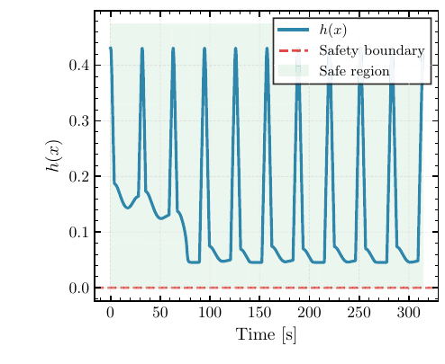
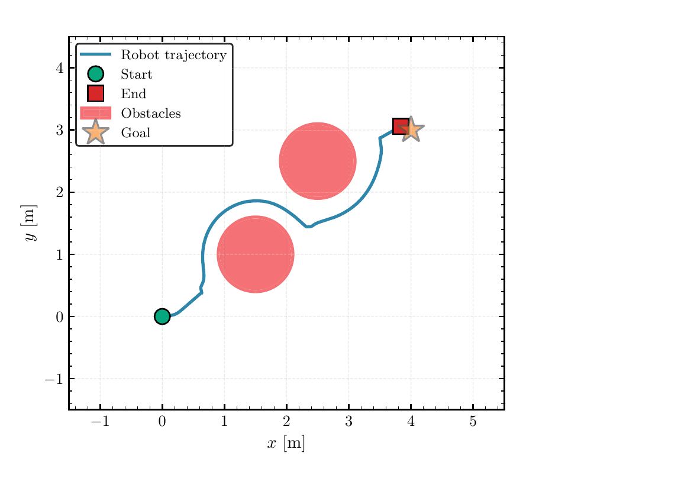
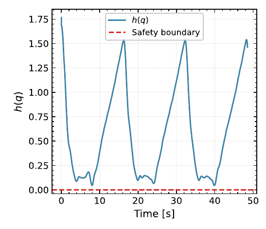
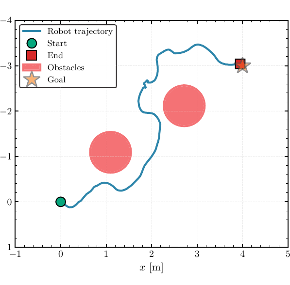
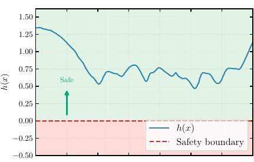
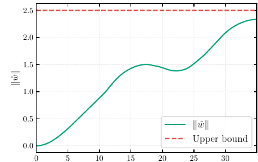

for Robotic Systems with Unknown Dynamics via Barrier Functions
Kasra Sinaei · Donald Ebeigbe
Control and Autonomous Robotics Lab · Department of Electrical Engineering
The Pennsylvania State University
An adaptive controller is least informed at t = 0, exactly when the robot starts moving.
The filter needs the model you are still learning: with poor estimates it can fail to prevent unsafe behavior, or stay conservative forever.
A real-time QP perturbs the parameter estimate instead, carrying a model-error bound that shrinks as the robot learns. No external filter.
\(Z\) known basis functions (RBF / Fourier) · \(W\) unknown weights, \(\|W\|\le W_{\max}\) · \(\|\varepsilon\|\le E\).
Every term of \(\bar V_0\) is known a priori, and the integral only grows, so \(\bar W(t)\) is non-increasing. Stability is never traded away (Thm. 1); \(\hat W\) need not converge (Remark 1).
The end-effector drives through the red keep-out sphere.
Same unknown dynamics: it skirts the sphere and still reaches every waypoint.

Mass–damper: \(h>0\) for 314 s; its floor drops \(\approx0.15\to0.05\) after \(\sim\)60 s: \(\bar W(t)\) decaying.

Mobile robot: unknown drift, reference driven straight through both obstacles; \(h\ge0\) never violated.

UR10, 6-DoF: 66 unknown parameters at 100 Hz; \(h(q)\) never crosses zero. \(\nabla h\) needs only the kinematic Jacobian (Remark 3).



Validated on a nonlinear mass–damper, a drifting mobile robot, a 6-DoF UR10 in IsaacSim, and a Unitree Go1 in hardware, all with fully unknown dynamics.
Next extending the framework to underactuated systems, removing the heuristic velocity mapping (Remark 4).
K. Sinaei and D. Ebeigbe, “Safe Adaptive Control With
Vanishing Conservativeness for Robotic Systems With Unknown Dynamics via Barrier Functions,”
IEEE Robotics and Automation Letters, vol. 11, no. 5, pp. 6161–6168, 2026.
doi:10.1109/LRA.2026.3678137
kasra@psu.edu · Control and Autonomous Robotics Lab, Penn State